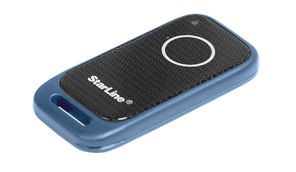
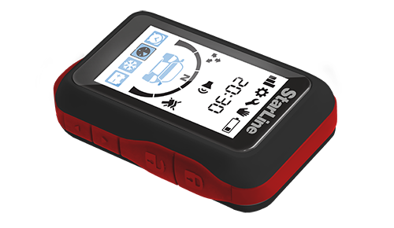
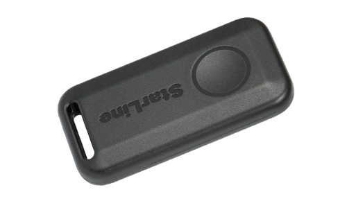

Автосервис «Корея Авто» в Дзержинске
Комплексы с автозапуском Комплексы без автозапуска Комплексы для мотоциклов Системы слежения (маяки, трекеры)
-
Победит B97 LTE 
Включает в себя 7 рубежей защиты: надежная охрана периметра с информированием на брелок и смартфон, умная авторизация владельца по смартфону и персональной метке на основе технологии Bluetooth Smart и брелку, электромеханическая защита капота,умная беспроводная блокировка двигателя, бесплатный online мониторинг, автономный поисковый маяк, гарантия финансовой безопасности - дополнительная выплата по КАСКО, в случае угона авто с установленным данным комплексом, 75 000 рублей Стоимость 46 250 Стоимость установки 16 500 Стоимость c установкой
61 750 (при условии покупки комплекса у нас,скидка 1000 на установку) -
Победит S96 v2 Надежная охрана периметра с информированием на смартфон, умная авторизация владельца по смартфону и персональной метке на основе технологии, Bluetooth Smart, электромеханическая защита капота, умная беспроводная блокировка двигателя, бесплатный online мониторинг, автономный поисковый маяк. Гарантия финансовой безопасности - дополнительная выплата по КАСКО, в случае угона авто с установленным данным комплексом, 75 000 рублей  Стоимость 38 300 Стоимость установки 6 500 Стоимость c установкой
43 800 (при условии покупки комплекса у нас, скидка 1000 на установку) -
Победит AS97 LTE Надежная охрана периметра с информированием на смартфон, умная авторизация владельца по смартфону и персональной метке на основе технологии, Bluetooth Smart, электромеханическая защита капота, умная беспроводная блокировка двигателя, бесплатный online мониторинг, автономный поисковый маяк. Гарантия финансовой безопасности - дополнительная выплата по КАСКО, в случае угона авто с установленным данным комплексом, 75 000 рублей Стоимость 34 650 Стоимость установки 6 500 Стоимость c установкой
41 950 (при условии покупки комплекса у нас, скидка 1000 на установку) -
Starline D97 LTE-GPS Надежный автомобильный охранно-телематический комплекс с интеллектуальным автозапуском, несканируемым диалоговым кодом управления, интегрированными 2CAN+2LIN, GSM+BT и GPS+ГЛОНАСС интерфейсами, ударопрочным брелком управления, помехозащищенным трансивером с малошумящим усилителем 
Стоимость 34 200 Стоимость установки 6 500 Стоимость c установкой
39 700 (при условии покупки комплекса у нас, скидка 1000 на установку) -
Starline B97 LTE-GPS Надежный автомобильный охранно-телематический комплекс с интеллектуальным автозапуском, несканируемым диалоговым кодом управления, интегрированными 2CAN+2LIN, GSM+BT и GPS+ГЛОНАСС интерфейсами, ударопрочным брелком управления, помехозащищенным трансивером с малошумящим усилителем Стоимость 34 200 Стоимость установки 6 500 Стоимость c установкой
39 700 (при условии покупки комплекса у нас, скидка 1000 на установку) -
Starline A97 BT GSM-GPS 
Центральный блок с интегрированным 3CAN+4LIN и Bluetooth Smart-интерфейсом, LTE-модулем, приемопередатчиком, брелок с обратной связью с ЖКИ - функция SLAVE,дополнительный брелок-метка BLE, силовой модуль запуска, навигационный модуль c ГЛОНАСС+GPS-антенной, реле блокировки двигателя R6, сирена, 2SIM: интегрированный SIM-чип МТС+ SIM-холдер, различные варианты комплектаций SIM-картами, комплекты проводов и печатной продукции 
Стоимость 30 950 Стоимость установки 6 500 Стоимость c установкой
36 450 (при условии покупки комплекса у нас, скидка 1000 на установку) -
Starline AS97 LTE-GPS 
Центральный блок с интегрированным 3CAN+4LIN и Bluetooth Smart-интерфейсом, LTE-модулем, дополнительный брелок-метка BLE (2 шт.), силовой модуль запуска, навигационный модуль c ГЛОНАСС+GPS-антенной, сирена, 2SIM: интегрированный SIM-чип МТС+ SIM-холдер, различные варианты комплектаций SIM-картами,комплекты проводов и печатной продукции 
Стоимость 23 450 Стоимость установки 6 500 Стоимость c установкой
28 950 (при условии покупки комплекса у нас, скидка 1000 на установку) -
Starline AS97 LTE-GPS Центральный блок с интегрированным 3CAN+4LIN и Bluetooth Smart-интерфейсом, LTE-модулем, дополнительный брелок-метка BLE (2 шт.), силовой модуль запуска, навигационный модуль c ГЛОНАСС+GPS-антенной, сирена, 2SIM: интегрированный SIM-чип МТС+ SIM-холдер, различные варианты комплектаций SIM-картами,комплекты проводов и печатной продукции Стоимость 23 450 Стоимость установки 6 500 Стоимость c установкой
28 950 (при условии покупки комплекса у нас, скидка 1000 на установку) -
Starline A97 BT GSM 
Центральный блок с интегрированным 3CAN+4LIN и Bluetooth Smart-интерфейсом, GSM и приемопередатчиком, брелок с обратной связью с ЖКИ - функция SLAVE, дополнительный брелок-метка BLE, силовой модуль запуска , сирена, 2SIM: интегрированный SIM-чип МТС+ SIM-холдер, различные варианты комплектаций SIM-картами, комплекты проводов и печатной продукции 
Стоимость 25 300 Стоимость установки 6 500 Стоимость c установкой
30 800 (при условии покупки комплекса у нас, скидка 1000 на установку) -
Starline B97 
Центральный блок с интегрированными 3CAN+4LIN и Bluetooth Smart-интерфейсом и приемопередатчиком, брелок с обратной связью с ЖКИ - функция SLAVE, дополнительный брелок-метка BLE, силовой модуль запуска, сирена, комплекты проводов и печатной продукции Стоимость 22 900 Стоимость установки 6 500 Стоимость c установкой
28 400 (при условии покупки комплекса у нас, скидка 1000 на установку) -
Starline A97 BT 
Центральный блок с интегрированным 3CAN+4LIN и Bluetooth Smart-интерфейсом и приемопередатчиком, брелок с обратной связью с ЖКИ - функция SLAVE, доп. брелок , силовой модуль запуска, сирена, комплекты проводов и печатной продукции Стоимость 19 950 Стоимость установки 6 500 Стоимость c установкой
25 450 (при условии покупки комплекса у нас, скидка 1000 на установку) -
Starline E96 v2 BT 2CAN+4LIN 2SIM GSM-GPS 
Центральный блок с интегрированным 2CAN+4LIN и GSM, и Bluetooth Smart - интерфейсами и приемопередатчиком, навигационный модуль c ГЛОНАСС+GPS-антенной, 3D датчиком удара, наклона и движения, брелок с обратной связью с ЖКИ- функция SLAVE, дополнительный брелок-метка BLE, интегрированный SIM-чип МТС+ SIM-холдер, различные варианты комплектаций SIM-картами, силовой модуль запуска, сирена, чехол кожаный, комплекты проводов и печатной продукции  Стоимость 19 750 Стоимость установки 6 500 Стоимость c установкой
25 250 (при условии покупки комплекса у нас, скидка 1000 на установку) -
Starline А93 v2 GSM 
Центральный блок c интегрированным GSM-модулем, брелок с обратной связью с ЖКИ- функция SLAVE, доп.брелок- функция SLAVE, силовой модуль запуска, модуль приемопередатчика с интегрированными 3D датчиками удара и наклона, сирена,различные варианты комплектаций SIM-картами, комплекты проводов и печатной продукции 
Стоимость 16 900 Стоимость установки 6 500 Стоимость c установкой
22 400 (при условии покупки комплекса у нас, скидка 1000 на установку) -
Starline А93 v2 2CAN+2LIN GSM ECO 
Центральный блок c интегрированным GSM-модулем и интегрированным 2CAN+2LIN-интерфейсом, брелок с обратной связью с ЖКИ- функция SLAVE, силовой модуль запуска, модуль приемопередатчика с интегрированными 3D датчиками удара и наклона, сирена, различные варианты комплектаций SIM-картами, комплекты проводов и печатной продукции 
Стоимость 16 850 Стоимость установки 6 500 Стоимость c установкой
22 350 (при условии покупки комплекса у нас, скидка 1000 на установку) -
Starline S96 v2 BT 2CAN+4LIN 2SIM GSM-GPS 
Центральный блок с интегрированным 2CAN+4LIN, Bluetooth Smart - интерфейсом и GSM-модулем, навигационный модуль c ГЛОНАСС+GPS-антенной, 3D датчиком удара, наклона и движения, дополнительный брелок-метка BLE (2 шт.), силовой модуль запуска, сирена, интегрированный SIM-чип МТС+ SIM-холдер, различные варианты комплектаций SIM-картами, комплекты проводов и печатной продукции  Стоимость 16 050 Стоимость установки 6 500 Стоимость c установкой
21 550 (при условии покупки комплекса у нас, скидка 1000 на установку) -
Starline S96 v2 BT 2CAN+4LIN 2SIM GSM Центральный блок с интегрированным 2CAN+4LIN, Bluetooth Smart - интерфейсом и GSM-модулем, 3D датчиком удара, наклона и движения, дополнительный брелок-метка BLE (2 шт.), силовой модуль запуска, сирена,интегрированный SIM-чип МТС+ SIM-холдер, различные варианты комплектаций SIM-картами, комплекты проводов и печатной продукции Стоимость 12 800 Стоимость установки 6 500 Стоимость c установкой
18 300 (при условии покупки комплекса у нас, скидка 1000 на установку) -
Starline E96 V2 BT 2CAN+4LIN 
Центральный блок с интегрированным 2CAN+4LIN и Bluetooth Smart - интерфейсами и приемопередатчиком, 3D датчиком удара, наклона и движения, брелок с обратной связью с ЖКИ - функция SLAVE, дополнительный брелок-метка BLE, силовой модуль запуска, сирена, чехол кожаный, комплекты проводов и печатной продукции 
Стоимость 12 800 Стоимость установки 6 500 Стоимость c установкой
18 300 (при условии покупки комплекса у нас, скидка 1000 на установку) -
Starline А93 v2 
Центральный блок, брелок с обратной связью с ЖКИ- функция SLAVE, доп.брелок- функция SLAVE, силовой модуль запуска, модуль приемопередатчика с интегрированными 3D датчиками удара и наклона, сирена, комплекты проводов и печатной продукции 
Стоимость 11 350 Стоимость установки 6 500 Стоимость c установкой
16 850 (при условии покупки комплекса у нас, скидка 1000 на установку) -
Starline E96 V2 BT ECO 2CAN+4LIN Центральный блок с интегрированным 2CAN+4LIN и Bluetooth Smart - интерфейсами и приемопередатчиком, 3D датчиком удара, наклона и движения, брелок с обратной связью с ЖКИ - функция SLAVE, силовой модуль запуска, сирена, комплекты проводов и печатной продукции Стоимость 11 250 Стоимость установки 6 500 Стоимость c установкой
16 750 (при условии покупки комплекса у нас, скидка 1000 на установку) -
Starline А93 v2 2CAN+2LIN ECO Центральный блок с интегрированным 2CAN+2LIN-интерфейсом, брелок с обратной связью с ЖКИ - функция SLAVE, силовой модуль запуска, модуль приемопередатчика с интегрированными 3D датчиками удара и наклона, сирена, комплекты проводов и печатной продукции Стоимость 11 250 Стоимость установки 6 500 Стоимость c установкой
16 750 (при условии покупки комплекса у нас, скидка 1000 на установку) -
Starline А93 v2 ECO 
Центральный блок, брелок с обратной связью с ЖКИ- функция SLAVE, силовой модуль запуска, модуль приемопередатчика с интегрированными 3D датчиками удара и наклона, сирена, комплекты проводов и печатной продукции 
Стоимость 9 900 Стоимость установки 6 500 Стоимость c установкой
15 400 (при условии покупки комплекса у нас, скидка 1000 на установку)
Наши работы: